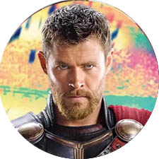

| 
|  |
Thor: Ragnarok
| Onde Assistir? |
Duração |
Data de Lançamento |
Avaliação Média
(Rotten Tomatoes) |
| Disney+ |
131 minutos |
Out/2017 |
93% |
Sinopse
Em Thor: Ragnarok, Thor (Chris Hemsworth) está preso do outro lado do universo. Ele precisa correr contra o tempo para voltar a Asgard e impedir o Ragnarok, a destruição de seu mundo, que está nas mãos da poderosa e implacável vilã Hela (Cate Blanchett).
Elenco Principal
Chris Hemsworth - Thor
Idris Elba - Heimdall
Cate Blanchett - Hela
Tom Hiddleston - Loki
Mark Ruffalo - Hulk
Jeff Goldblum - Grandmaster